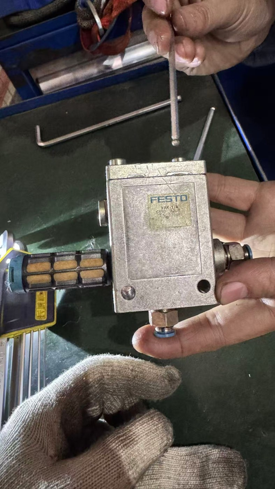
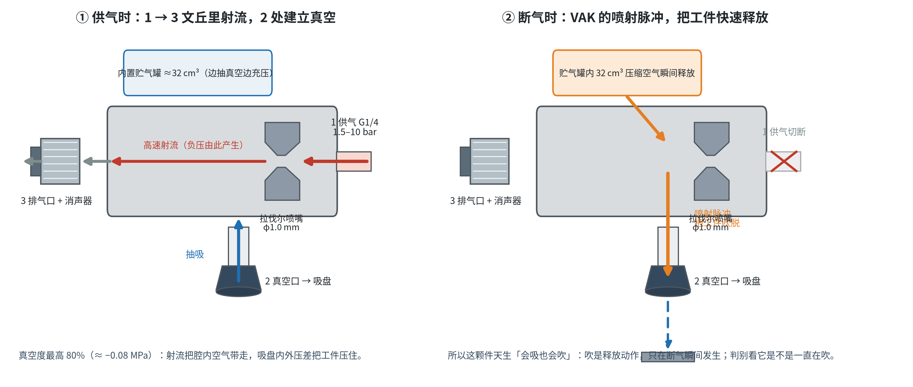
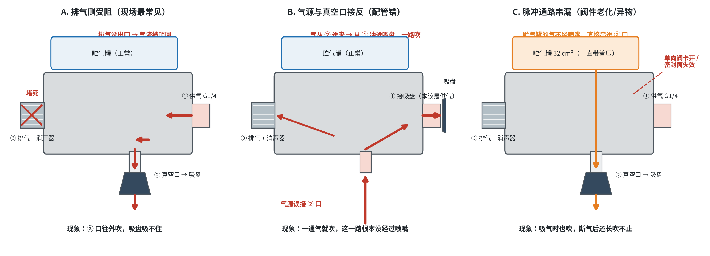
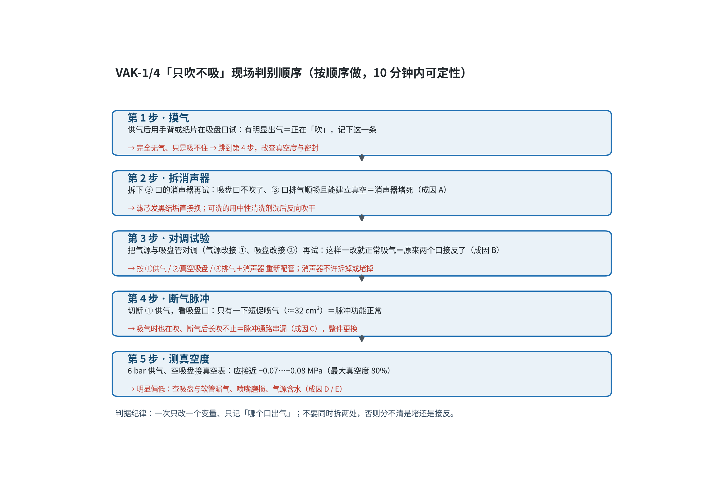

Stamping Technology Notes
真空发生器为什么「只吹气、不吸气」——VAK-1/4 的文丘里原理、喷射脉冲与三条故障链
编制：冯国庆 H0362 日期：2026-11-14 适用：舒勒高速自动线（南京江宁 · 上汽大乘用车）· 端拾器与吸盘气路
素材口径：现场实物 Festo VAK-1/4（订货号 6890，GTIN 4052568001452）；参数取自 Festo 数据表 6890 与样本《真空发生器 VAD/VAK》；实物照片为现场拍摄。
端拾器吸盘接上这颗真空发生器后，只吹气、吸不住工件，而且是一直吹——与"应该是吸气"的预期相反。整件已拆下，消声器也拆出来看过。


切断 ① 供气，射流消失、真空解除；贮气罐里的 32 cm³ 压缩空气经 ② 反向冲入吸盘，形成一次短促的喷吹，把工件干脆地吹脱——这是 VAK 相比 VAD 的核心卖点，用于薄板件快速脱料。
判别基准：正常件是「长时间吸气 + 一瞬间吹」。凡是「一直吹」「每次通气都吹」「吹的气量随供气压力变大」，都是故障，不是设计如此。

③ 口的消声器烧结滤芯被油雾、粉尘、结垢堵死（或被人为堵住、缠胶带降噪），射流排不出去，① 的压缩空气在腔内憋压，只能沿阻力最小的 ② 口反向冲出——表现出来正好是"吸盘变成吹气嘴、真空建立不起来"。
气源接到 ②、吸盘接到 ①：压缩空气进入腔体后不经喷嘴，直接从 ① 冲进吸盘，全程正压，与真空发生器的工作原理无关。
内部单向阀卡在开启位或密封面失效，贮气罐与 ② 口常通：吸气时罐内空气不断漏进 ②，真空上不去；断气后余气继续外吹。
喷嘴磨损或堵塞（真空度下降、但仍从 ③ 排气）、吸盘与软管漏气、气源含水含油导致内部结垢、供气压力超过 10 bar。这几类一般不产生正向吹气。

| 步骤 | 动作与判据 | 结论／处置 |
|---|---|---|
| 1 摸气 | 供气后用手背或纸片在吸盘口试：明显出气＝正在吹 | 无气只是吸不住 → 跳到第 4 步，改查真空度与密封 |
| 2 拆消声器 | 拆下 ③ 口消声器再试：吸盘口不吹了、③ 排气顺畅且能建立真空 | 消声器堵死（A）：清洗后反向吹干；滤芯发黑结硬壳直接换新 |
| 3 对调试验 | 气源改接 ①、吸盘改接 ②（恢复标准接法）再试 | 配管错（B）：按 ①供气／②吸盘／③排气＋消声器 重新配管并做标识 |
| 4 断气脉冲 | 切断 ① 供气，看吸盘口：应只有一下短促喷气（≈32 cm³） | 长吹不止／吸气时也吹＝脉冲通路串漏（C），整件更换 |
| 5 测真空度 | 6 bar 供气、空吸盘接真空表：应接近 −0.07…−0.08 MPa | 明显偏低：查吸盘/软管漏气、喷嘴磨损、气源含水（D／E） |
| 项目 | 要求 | 周期 |
|---|---|---|
| 消声器／烧结滤芯 | 拆检是否发黑结壳；可洗的用中性清洗剂洗后反向吹干；破损或洗不净直接换新（易损件，建议常备 1–2 只） | 每周点检；油污重的产线每班看 |
| 排气口 ③ | 严禁拆除、堵死、缠胶带降噪；消声器拧到位，漏气同样损失真空 | 换件／复装时确认 |
| 配管标识 | ①／②／③ 三点做永久标识，抢修复装后按标识复核 | 一次性落实 |
| 气源质量 | 按 ISO 8573-1:2010 [7:4:4]：末端加装油水分离＋精密过滤，定期排水 | 每周排水，滤芯按压差更换 |
| 供气压力 | 维持 4–6 bar 使用，不超过 10 bar 上限 | 纳入日常点检 |
| 功能验证 | 换件或保养后做「双验证」：空吸盘测真空度 ＋ 断气看喷射脉冲 | 每次保养后 |
这颗件本身「会吸也会吹」：吹是喷射脉冲释放工件的正常动作，只该发生一瞬间。持续吹气、真空建立不起来属故障。按现场概率：先查 ③ 口消声器是否堵死（A），再查 ①② 是否接反（B），最后判断内部脉冲通路是否串漏（C）。三者分清之后，再考虑喷嘴磨损与泄漏。
一并提交的单页 PDF（含全部图示与照片）：VAK-1_4真空发生器只吹不吸_原理分析与排查_2026-11-14.pdf。
冯国庆 H0362